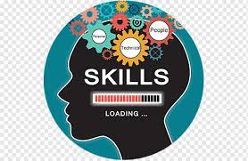

OBJECTIVE
I hold a diploma in software development and currently pursuing my advanced diploma in Computer science.Over the years I have acquired skills and knowledge in this field.
I am ambitious, self-motivated, and always pride myself in being dedicated and my ability to work well under pressure and still produce work in the most accurate manner.
I chose the field Information Technology (IT) because it allows me to be creative and to home in on the problem-solving skills.
I love the field because it’s broad, so I feel like the trajectory of my career could be in multiple fields such Database Management, Project Management, Systems Analyst, IT Support, Developer and many more.
I work well in a team, with impeccable time management skills, ensuring to always meet deadlines I am currently looking for opportunities where I can use my theoretical knowledge that I have gained in a more practical sense.
Most importantly I am interested to be in an environment where I will be afforded the chance to learn and grow professionally as an IT professional.
Willing to relocate: Anywhere
EDUCATION
1. Tshwane University of Technology
Diploma in Information Technology January 2019 - December 2022Major : Software Development, Information systems, Project Management, Industry exposure, System Software, Technical programming.
2. Tshwane University of Technology
Advanced Diploma in Computer Science January 2023 - IN PROGRESS
SKILLS
- Effective communication
- Problem solving
- Leadership
- Proficiency in Microsoft office
- Good interpersonal skills
- Proficiency in VB Net
- C++
- HTML
- Basic CSS
- Linux
- Scratch
- Figma
- PL/SQL
- Basic Programming Python
- Basic Programming Java
- Basic Programming Dart
- Troubleshooting
WORK EXPERIENCE
Department of Cooperative Goverance, Human Settlements and Traditional AffairsJune 2022 - December 2022
KEY RESPONSIBILTIES
CERTIFICATES
-
IT Support FundamentalsDecember 2022
Coursera
-
Introduction to Android DevelopmentSeptember 2022
Coursera
-
Python3February 2022
Codecademy